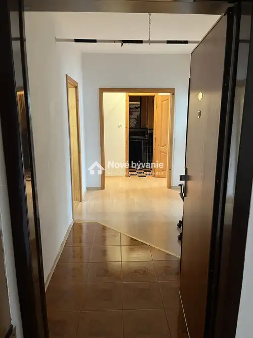
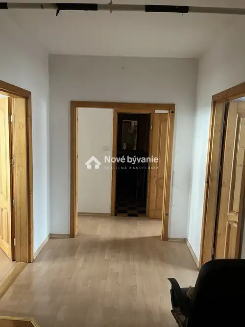
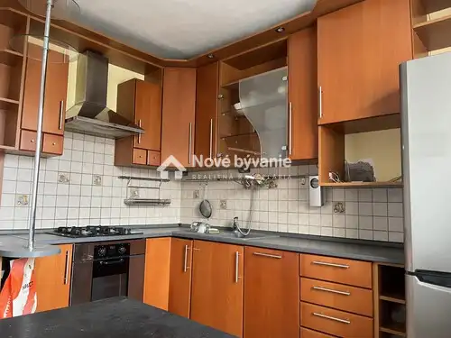
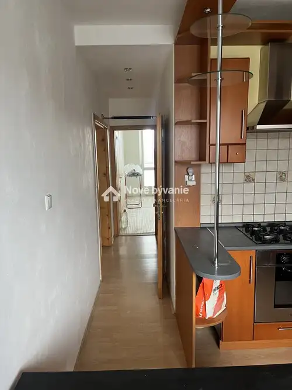
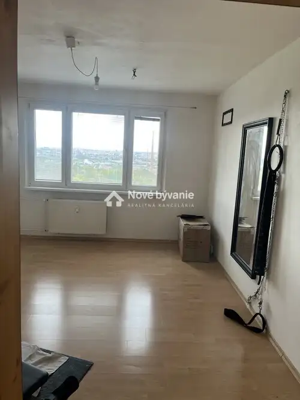
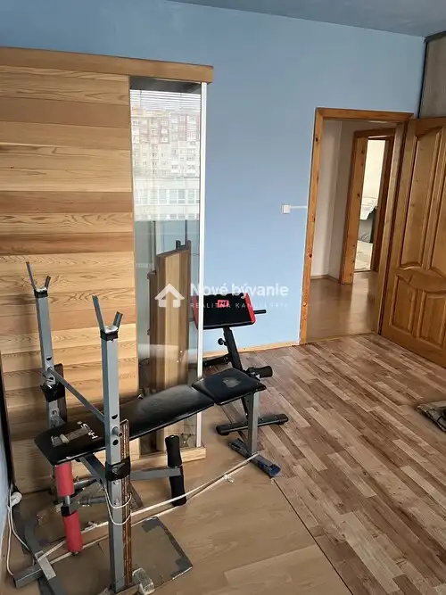
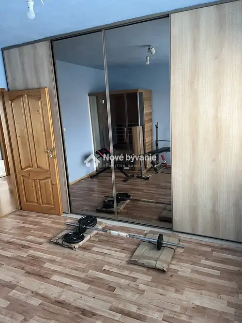
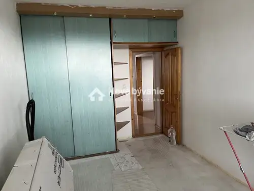
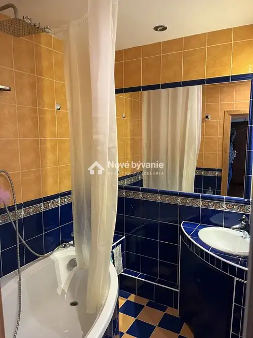

Predám 3-izbový byt na ulici Bruselská, Košice N003-113-BILL
Ťahanovce, Košice









- Dispozícia3-izbový
- Plocha72 m²
- StavPôvodný stav
- VlastníctvoOsobné
- Energetická triedaB
O nehnuteľnosti
ID: N003-113-BILL Ponúkám na predaj priestranný 3-izbový byt na ulici Bruselská na Sídlisku Ťahanovce v Košiciach s celkovou výmerou 76 m². Byt sa nachádza v pôvodnom stave, čo poskytuje novému majiteľovi ideálnu príležitosť na prerobenie bytu podľa vlastných predstáv. Spolu s bytom sa predáva pivnica s výmerou 2m2. Byt je v osobnom vlastníctve bez zaťaženia hypotékou. Byt je úplne prázdny a je ihneď voľný ku kúpe. Výhody bytu:- rozloha 72 m² s veľkými, svetlými izbami orientovanými na východ a západ- priestranná chodba - pôvodný stav - kompletne vyprataný – vhodný na okamžitú kompletnú rekonštrukciu- byt je situovaný na okraji sídliska Ťahanovce s nádherným výhľadom na mesto- výborná občianska vybavenosť v blízkosti (obchody, školy, MHD)Pre bližšie informácie sa s dôverou môžete kedykoľvek obrátiť na mňa prostredníctvom t.. č. +421 910 573 494 prípadne mailom na billy@novebyvaniereality.skSo mnou máte vyhodu "VŠETKO POD JEDNOU STRECHOU", zabezpečenie právnych služieb, služby financovania, protokolárne odovzdanie nehnuteľnosti a 100% servis aj v budúcnosti so spoľahlivým tímom čestných a kvalifikovaných ľudí s dlhoročnými skúsenosťami. S nadhľadom profesionálnych skúseností.
Parametre
- Cellar area
- 2 m²
- Cena vrátane energií
- Nie
- Druh
- 3 izbový byt
- Dátum zverejnenia
- 06. 10. 2025
- Energetický certifikát budovy
- B
- Plocha lodžie
- 4 m²
- Počet izieb / miestností
- 3
- Stav nehnuteľnosti
- Pôvodný stav
- Telekomunikácie
- Internet
- Typ
- Predaj
- Typ konštrukcie
- Panelová
- Vlastníctvo
- Osobné
- Vybavenie
- Lodžia, Pivnica, Výťah
- Vykurovanie
- Ústredné
- Zariadenie
- Nezariadené
- Úžitková plocha
- 72 m²